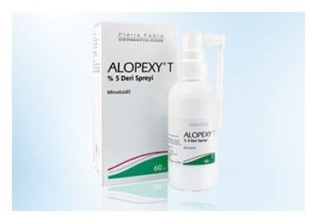

Alopexy T %5 Deri Spreyi, 60 ml

Ne için kullanılır
KT · Bölüm 1e Bir şişe ALOPEXY T (60 ml) 3 g Minoksidil içerir. e ALOPEXY T, topikal saç büyümesi uyarıcı bir ilaçtır. e Bir şişe ALOPEXY T (60 ml) 30 günlük kullanım dozunu içerir. Her bir püskürtme (0,2 ml) 10 mg Minoksidil içerir. e ALOPEXY T; Kellik (Androgenetik Alopesi)'in uzun süreli tedavisinde, saç dökülmesinin önlenmesi ve saç büyümesinin uyarılmasında kullanılır.